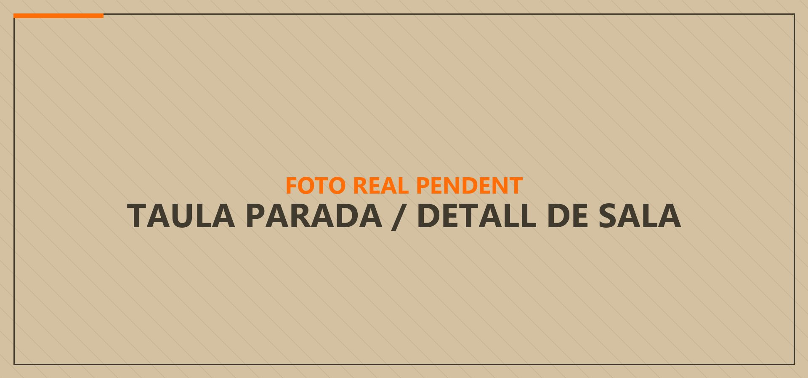
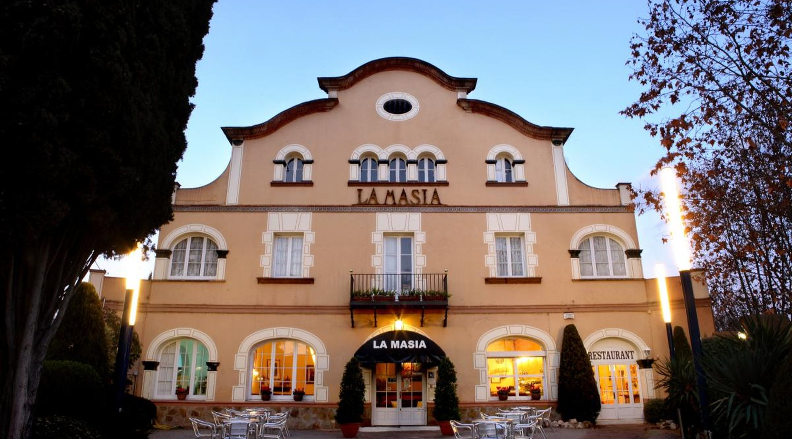
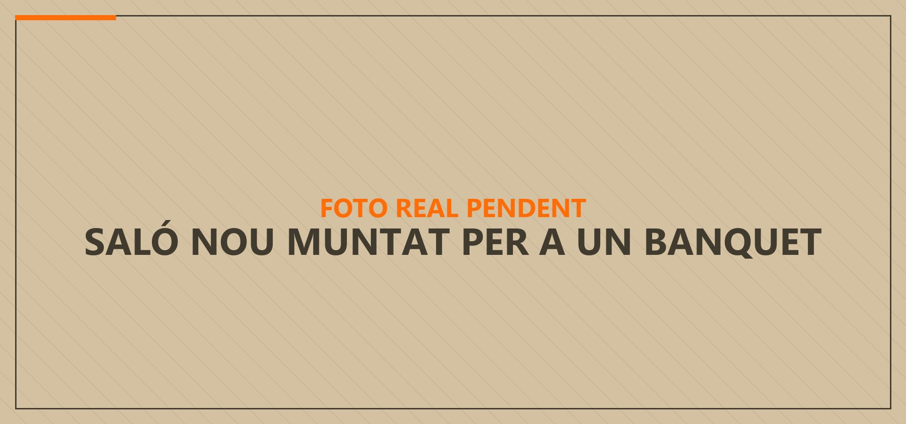
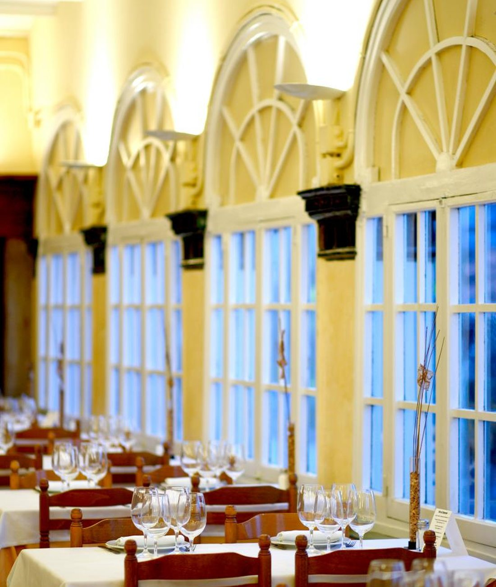
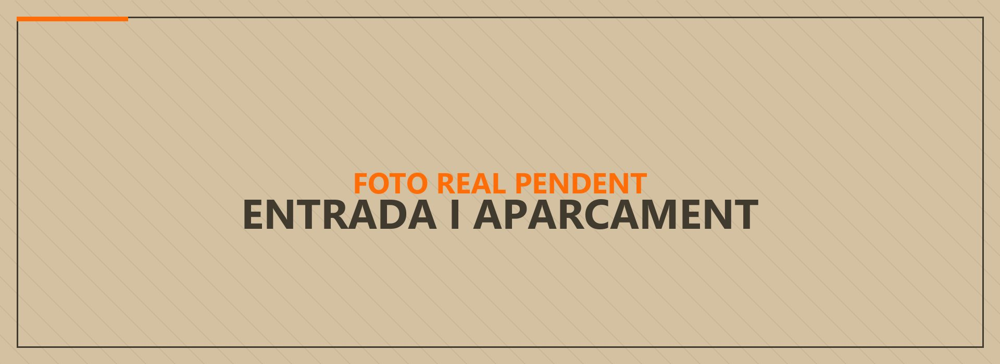

Cada diaLa carta i el menú diari
Entrants freds i calents, arrossos, peixos i carns. Menú diari de dilluns a divendres i menjar per emportar tots els dies de la setmana.
Veure la carta →
Una masia a l'entrada del poble, oberta des del 1957. Taula per a cada dia i quatre salons on l'Ametlla fa les seves celebracions.

Cada diaEntrants freds i calents, arrossos, peixos i carns. Menú diari de dilluns a divendres i menjar per emportar tots els dies de la setmana.
Veure la carta →
CelebracionsQuatre salons de capacitats diferents, del reservat de 20 places al Saló Nou de 200. Digueu-nos quants sereu i us diem quin espai us va bé.
Trobar el vostre espai →
La Masia és a l'entrada de l'Ametlla del Vallès, al carrer de la Torregassa. Va obrir el 1957 i des d'aleshores fa el mateix: cuina catalana i de mercat, feta cada dia.
A la carta hi ha els plats que la casa no ha canviat mai —els canelons de l'àvia, el filet de vedella a l'estil Roca— i els que van i venen amb la temporada: els calçots, els rossinyols, les trompetes de la mort.
I al costat del menjador, quatre salons on el poble ha celebrat comunions, bateigs i aniversaris de noces durant generacions.
El plat que més surt a les ressenyes de Google. Mínim 2 persones.
Un dels sis arrossos i pastes de la carta, amb la paella de llamàntol.
Els de sempre. Hi ha també la versió de verdures amb beixamel.
Mitjana de 1.931 ressenyes a Google. El restaurant amb més ressenyes de l'Ametlla del Vallès.
Valoració: 5 sobre 5
«Restaurant emblemàtic, de tota la vida. Sempre és un plaer anar-hi i degustar els seus plats, en especial el filet a l'estil Roca i els seus calamars a l'andalusa (els millors que he provat). El servei també és fantàstic.»Marina Girbau · Google
Valoració: 5 sobre 5
«Un clàssic a L'Ametlla del Vallès. Restaurant ubicat en un lloc excel·lent amb aparcament propi. El menjador ampli i agradable, tot molt net i endreçat.»P. Pc · Google
Valoració: 4 sobre 5
«Un restaurant de tota la vida. Manté la esencia. Cambrers professionals i menjar ben elaborat. Menú en dies laborables. Aparcament per cotxes al mateix restaurant.»David Hernandez · Google

Carrer de la Torregassa, 77 — L'Ametlla del Vallès
El mapa el serveix Google. Si el carregueu, Google podrà posar galetes al vostre navegador.